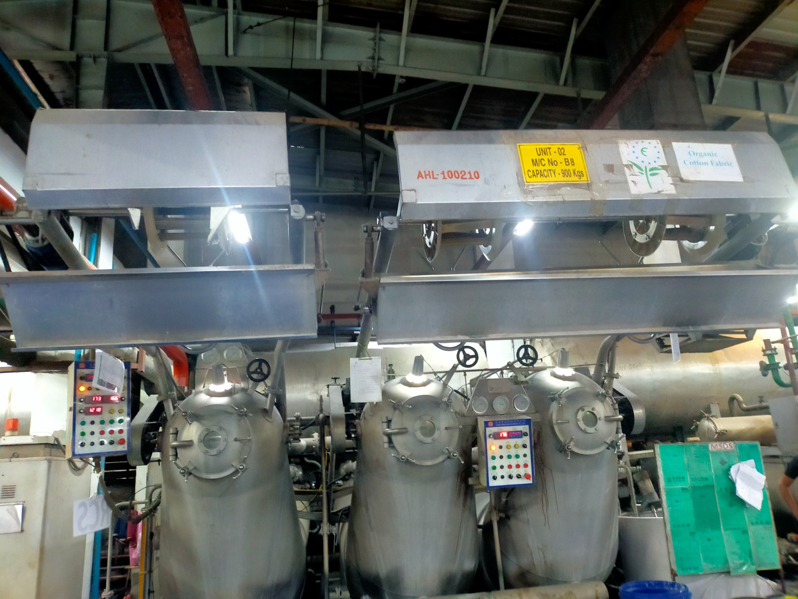

01
Fiber Preparation

Bale opening, blending, and carding for consistent fiber length and cleanliness before spinning.
Home / Process
How We Make
Six integrated stages — from raw cotton fiber to inspected, export-ready woven fabric at our Narayanganj mill.

End to End
Every lot moves through controlled gates with batch identity from fiber to dispatch.
Bale opening, blending, and carding for consistent fiber length and cleanliness before spinning.

Ring spinning of combed and carded yarn with controlled twist, U%, and strength for loom efficiency.
Warping, sizing, and weaving on air-jet and rapier looms — poplin, twill, oxford, and plain.

Greige fabric inspection for defects, width consistency, and construction verification against spec.

Pre-treatment, reactive or pigment dyeing, mercerization, sanforizing, and soft finishes as required.

Laboratory testing, shade approval, roll packing, and batch documentation for export shipment.
“Quality is not a final gate — it is built into every stage from fiber blend to packed roll.”
Schedule a facility visit or virtual walkthrough with our Narayanganj production team.